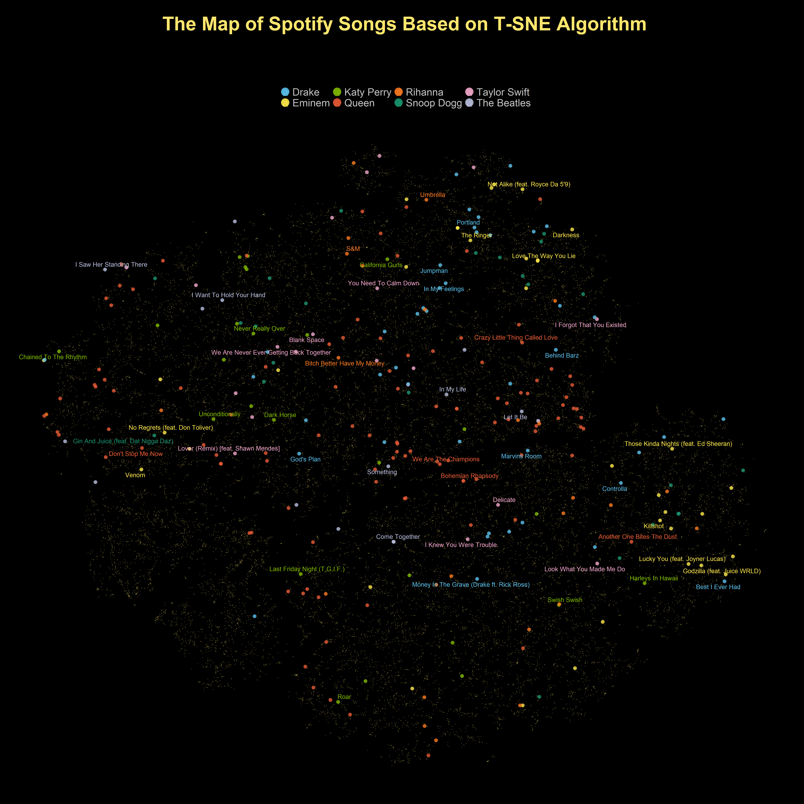
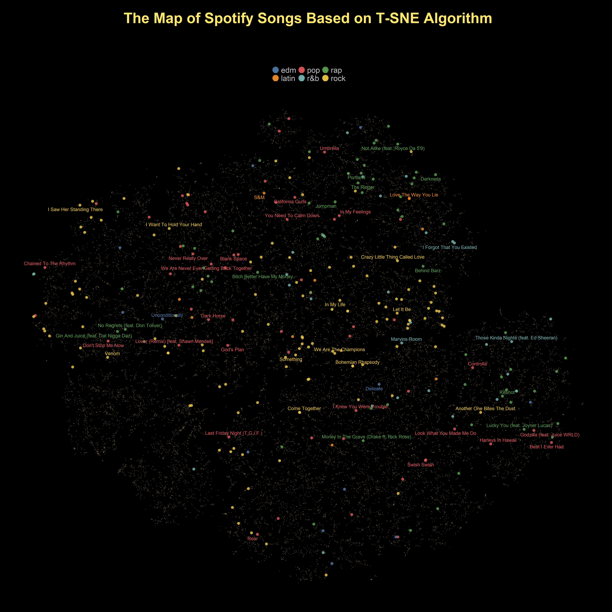
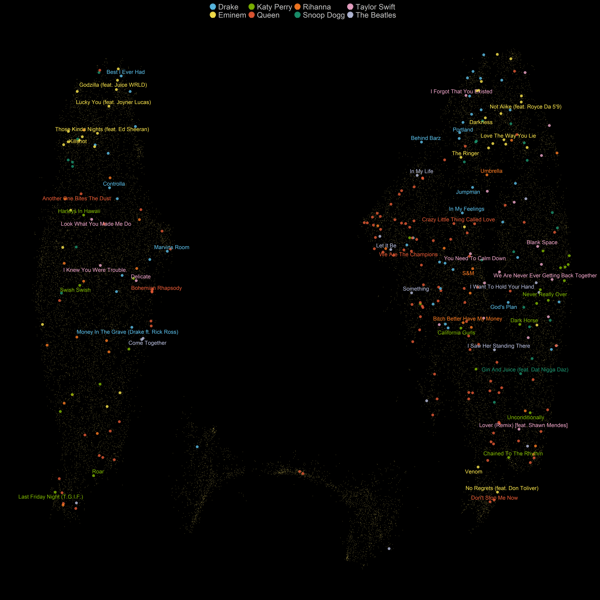
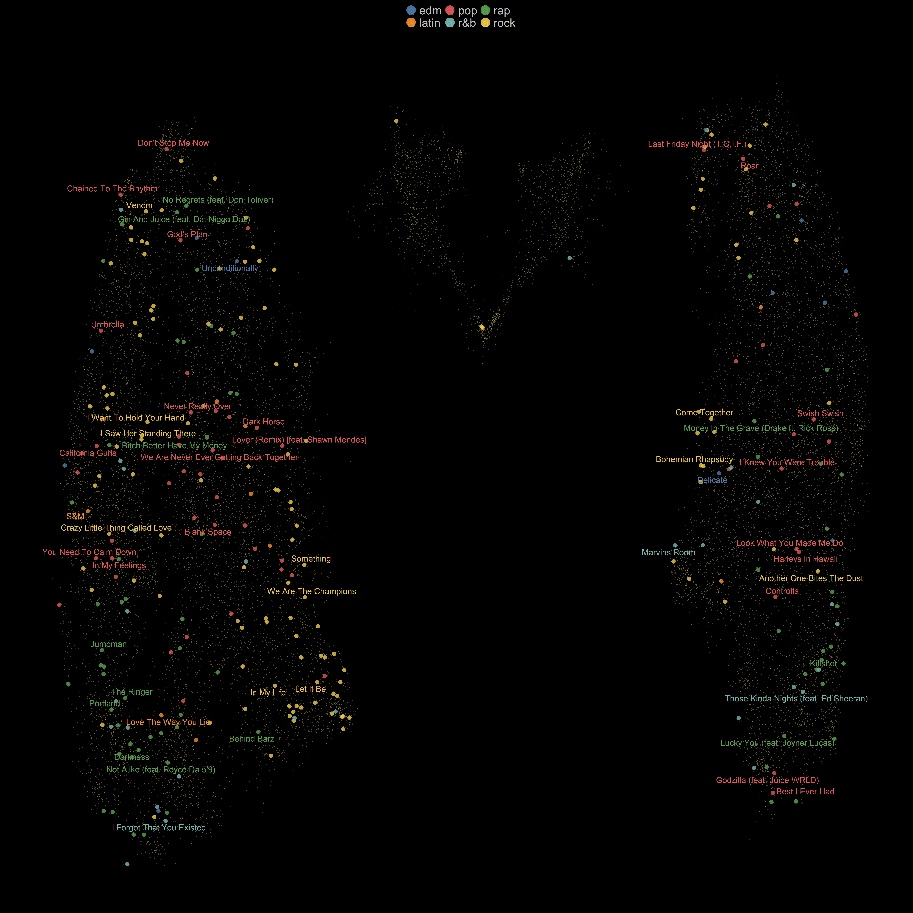
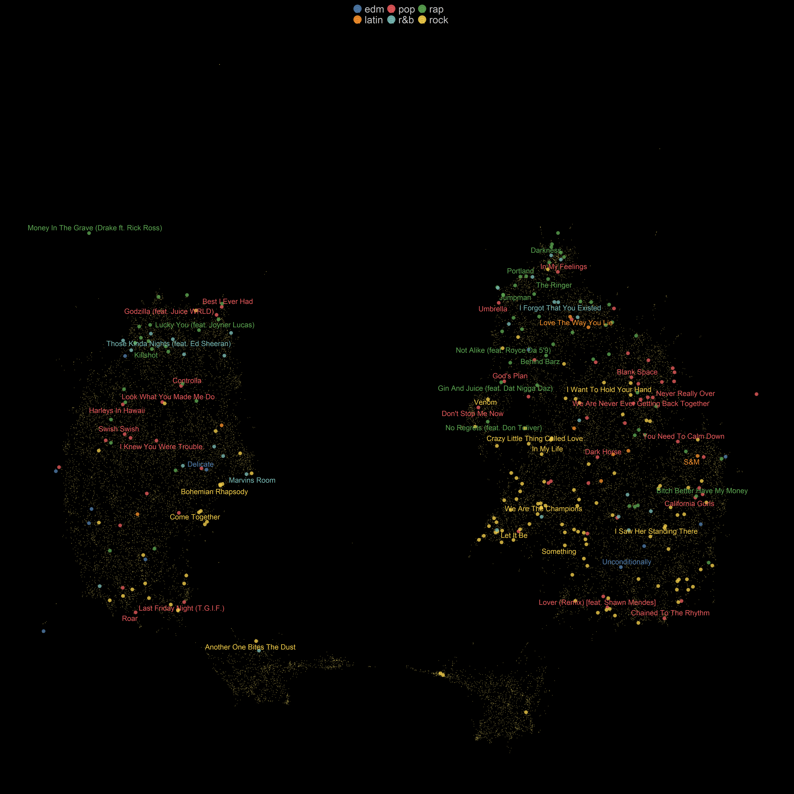
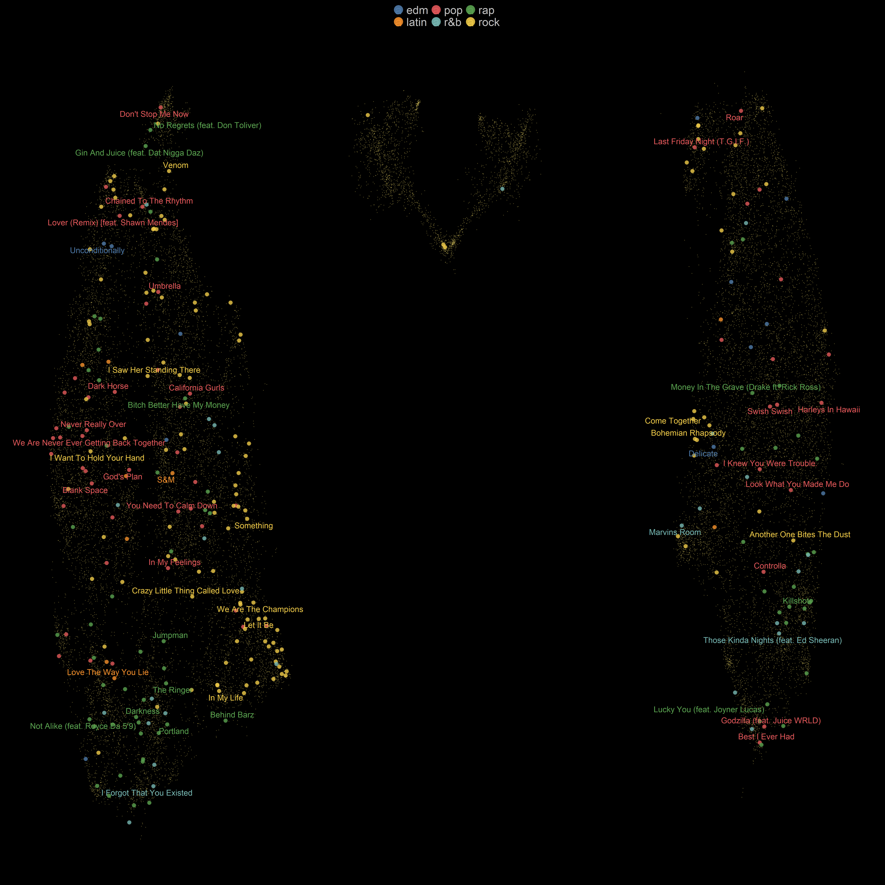
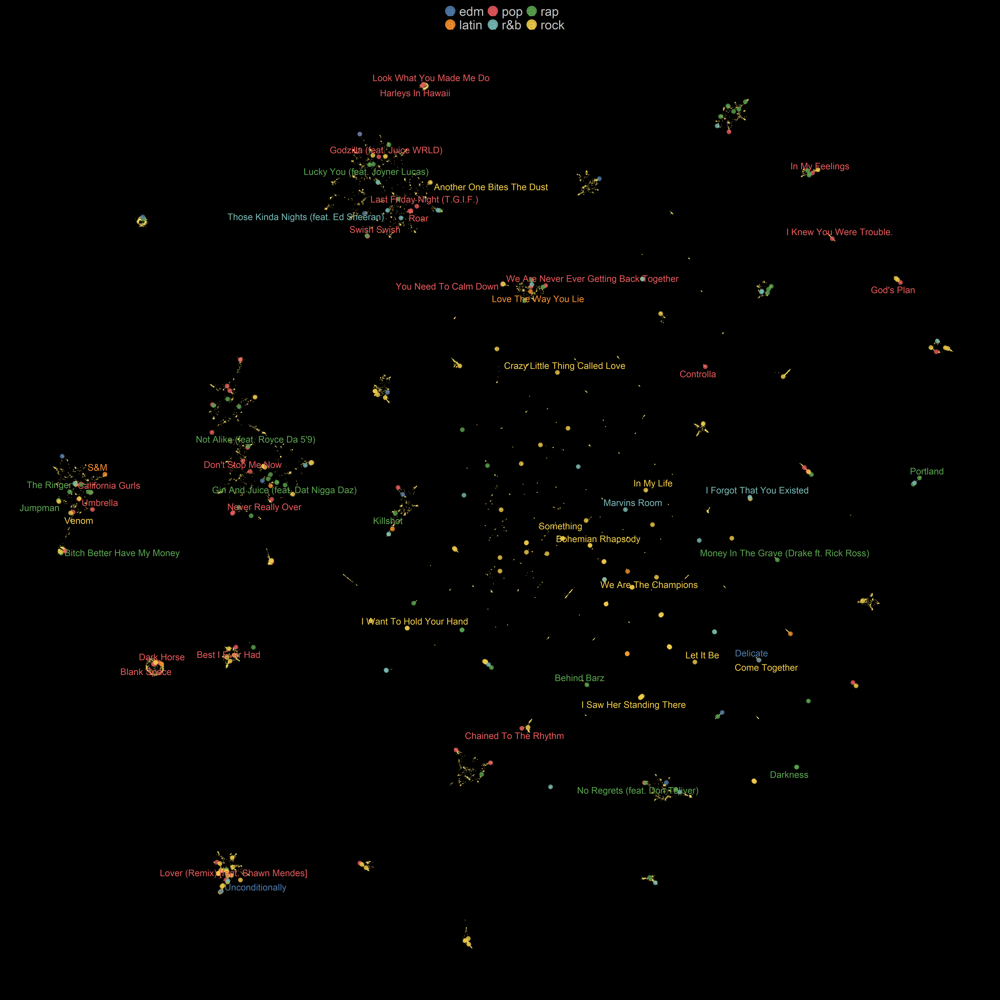
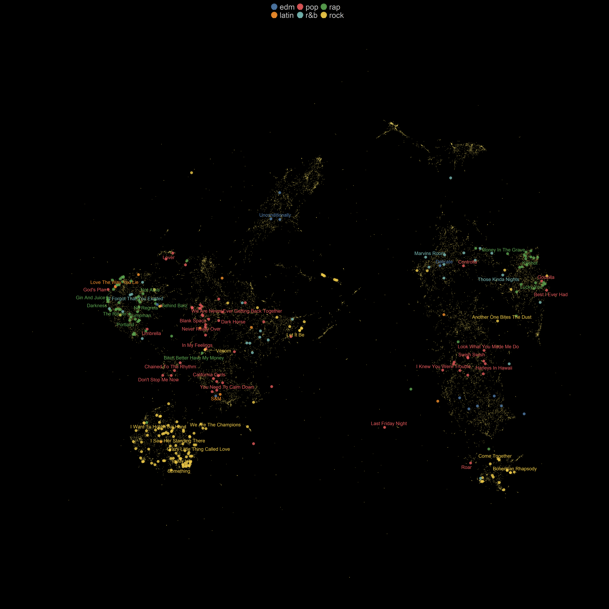

In the 4th week of the Tidy Tuesday project, a very interesting and fun dataset was proposed to the data science community. The dataset contains information about thousands of songs on Spotify’s platform and along with their metadata and audio features. You can download the dataset can using the following piece of code.
4th week of the Tidy Tuesday project
Show code
spotify_songs <- readr::read_csv('https://raw.githubusercontent.com/rfordatascience/tidytuesday/master/data/2020/2020-01-21/spotify_songs.csv')
head(spotify_songs)# A tibble: 6 x 23
track_id track_name track_artist track_popularity track_album_id
<chr> <chr> <chr> <dbl> <chr>
1 6f807x0i~ I Don't Care~ Ed Sheeran 66 2oCs0DGTsRO98~
2 0r7CVbZT~ Memories - D~ Maroon 5 67 63rPSO264uRjW~
3 1z1Hg7Vb~ All the Time~ Zara Larsson 70 1HoSmj2eLcsrR~
4 75Fpbthr~ Call You Min~ The Chainsm~ 60 1nqYsOef1yKKu~
5 1e8PAfcK~ Someone You ~ Lewis Capal~ 69 7m7vv9wlQ4i0L~
6 7fvUMiya~ Beautiful Pe~ Ed Sheeran 67 2yiy9cd2QktrN~
# ... with 18 more variables: track_album_name <chr>,
# track_album_release_date <chr>, playlist_name <chr>,
# playlist_id <chr>, playlist_genre <chr>, playlist_subgenre <chr>,
# danceability <dbl>, energy <dbl>, key <dbl>, loudness <dbl>,
# mode <dbl>, speechiness <dbl>, acousticness <dbl>,
# instrumentalness <dbl>, liveness <dbl>, valence <dbl>,
# tempo <dbl>, duration_ms <dbl>For this week’s tidy Tuesday, I decided to use a somewhat different approach from my previous submissions. Instead of focusing solely on the visualization aspect of my submissions, I tried to use other tools from the tidy model universe for machine learning model development,
Each song has around 12 columns representing audio features. The Github’s page for this dataset describes these features as follows:
| variable | class | description |
|---|---|---|
| danceability | double | Danceability describes how suitable a track is for dancing based on a combination of musical elements including tempo, rhythm stability, beat strength, and overall regularity. A value of 0.0 is least danceable and 1.0 is most danceable. |
| energy | double | Energy is a measure from 0.0 to 1.0 and represents a perceptual measure of intensity and activity. Typically, energetic tracks feel fast, loud, and noisy. For example, death metal has high energy, while a Bach prelude scores low on the scale. Perceptual features contributing to this attribute include dynamic range, perceived loudness, timbre, onset rate, and general entropy. |
| key | double | The estimated overall key of the track. Integers map to pitches using standard Pitch Class notation . E.g. 0 = C, 1 = C♯/D♭, 2 = D, and so on. If no key was detected, the value is -1. |
| loudness | double | The overall loudness of a track in decibels (dB). Loudness values are averaged across the entire track and are useful for comparing relative loudness of tracks. Loudness is the quality of a sound that is the primary psychological correlate of physical strength (amplitude). Values typical range between -60 and 0 db. |
| mode | double | Mode indicates the modality (major or minor) of a track, the type of scale from which its melodic content is derived. Major is represented by 1 and minor is 0. |
| speechiness | double | Speechiness detects the presence of spoken words in a track. The more exclusively speech-like the recording (e.g. talk show, audio book, poetry), the closer to 1.0 the attribute value. Values above 0.66 describe tracks that are probably made entirely of spoken words. Values between 0.33 and 0.66 describe tracks that may contain both music and speech, either in sections or layered, including such cases as rap music. Values below 0.33 most likely represent music and other non-speech-like tracks. |
| acousticness | double | A confidence measure from 0.0 to 1.0 of whether the track is acoustic. 1.0 represents high confidence the track is acoustic. |
| instrumentalness | double | Predicts whether a track contains no vocals. “Ooh” and “aah” sounds are treated as instrumental in this context. Rap or spoken word tracks are clearly “vocal”. The closer the instrumentalness value is to 1.0, the greater likelihood the track contains no vocal content. Values above 0.5 are intended to represent instrumental tracks, but confidence is higher as the value approaches 1.0. |
| liveness | double | Detects the presence of an audience in the recording. Higher liveness values represent an increased probability that the track was performed live. A value above 0.8 provides strong likelihood that the track is live. |
| valence | double | A measure from 0.0 to 1.0 describing the musical positiveness conveyed by a track. Tracks with high valence sound more positive (e.g. happy, cheerful, euphoric), while tracks with low valence sound more negative (e.g. sad, depressed, angry). |
| tempo | double | The overall estimated tempo of a track in beats per minute (BPM). In musical terminology, tempo is the speed or pace of a given piece and derives directly from the average beat duration. |
| duration_ms | double | Duration of song in milliseconds |
It would be very helpful to compare songs based on their audio features and have an overall picture of where each song is placed. Unfortunately, we can only visualize 2 or 3 audio features at the same time, and It is not possible to put all these features in a 2D or 3D space. So, I tried to use unsupervised machine learning to visualize songs on a 2D space by transforming their high-dimensional audio features into a more compressed form.
Show code
library(tidyverse)
library(tidymodels)
library(workflows)
library(gghighlight)
library(hrbrthemes)
library(ggthemes)
library(lubridate)
library(reticulate)
library(ggrepel)
library(plotly)
library(uwot)
theme_update(legend.position = 'top',
legend.text = element_text(size = 32,color = 'gray75' ),
legend.key = element_rect(fill = "black", color = "black"),
legend.background= element_rect(fill = "black", color = "black"),
plot.title = element_text(family = 'Montserrat', face = "bold", size = 60,hjust = 0.5,vjust = 0.5,color = '#FFE66D',margin = ggplot2::margin(40,0,0,0)),
plot.subtitle = element_text(
family = 'Montserrat', size = 30, hjust = 0.5),
strip.background = element_blank(),
plot.background = element_rect(fill = "black", color = "black"),
panel.background = element_rect(fill = "black", color = "black"),
panel.grid.major.x =element_blank(),
panel.grid.major.y =element_blank(),
panel.grid.minor =element_blank(),
axis.text.x.bottom = element_blank(),
axis.ticks.x = element_blank(),
axis.ticks.y = element_blank(),
axis.text.x = element_blank(),
axis.text.y.left = element_blank()) Dimensionality Reduction and UMAP
My initial idea was to use some clustering algorithms to cluster songs based on their audio feature and find songs that are similar to each other. Yet, it was not easy to visualize these clusters in a two-dimensional space. Of course, you can do that by using hierarchal clustering but even then, visualizing a few thousand samples (songs) seems to be impractical. So, I decided to use other unsupervised techniques to compress these high-dimensional audio features and transform them into a more compact 2D space.
There are several dimensionality reduction algorithms such as PCA, t-SNE UMAP. The primary purpose of these algorithms is to give us a compressed representation of the input data, while preserving the most relevant information in the data. PCA is a linear dimensionality reduction method, while both t-SNE and UMAP are non-linear methods.
In this post, I will use UMAP and t-SNE, two widely used dimensionality reduction algorithms. When the input dataset is large T-SNE becomes very slow and is not an efficient algorithm anymore. On the other hand, UMAP can handle larger datasets much more easily and quickly. Moreover, UMAP can preserve the underlying local structure present in the data, and it can also represent the global structure of the data more accurately. What do we mean by local and global structure? For example, in the song dataset, persevering local structure means that songs that belong to an artist are clustered together. Similarly, global structure means that songs belonging to more related genres (e.g., hard rock, album rock, and classic rock) will be placed in close proximity to each other on the new projection.
UMAP achieves this goal by employing some advanced optimization techniques and mathematical concepts. Understanding how UMAP uses these techniques and projects the input data into a more compressed representation is not crucial, but If you are curious to know more about the theory behind UMAP and its difference with T-SNE, I recommend this excellent blogpost by Andy Coenen and Adam Pearce.
Data Preprocessing
Both UMAP and T-SNE compute a distance metric between samples. This distance metric should be meaningful and reasonable. If we do not scale the input features before feeding them to these algorithms, some features might have a stronger (unfair) influence than other features on the computation of the distance between samples. For this reason, it is necessary to normalize input features before implementing them,
I create a data preprocessing recipe using the recipe package, and I add a normalization step to scale the audio features. Note that since I implement an unsupervised algorithm, there is no need to split the dataset into a training and testing dataset.
Show code
normalized_features <- spotify_songs %>%
recipe() %>%
step_normalize( danceability,
energy,
key,
loudness,
mode,
speechiness,
acousticness,
instrumentalness,
liveness,
valence,
tempo,
duration_ms) %>%
prep() %>%
juice()
head(normalized_features)# A tibble: 6 x 23
track_id track_name track_artist track_popularity track_album_id
<fct> <fct> <fct> <dbl> <fct>
1 6f807x0i~ I Don't Care~ Ed Sheeran 66 2oCs0DGTsRO98~
2 0r7CVbZT~ Memories - D~ Maroon 5 67 63rPSO264uRjW~
3 1z1Hg7Vb~ All the Time~ Zara Larsson 70 1HoSmj2eLcsrR~
4 75Fpbthr~ Call You Min~ The Chainsm~ 60 1nqYsOef1yKKu~
5 1e8PAfcK~ Someone You ~ Lewis Capal~ 69 7m7vv9wlQ4i0L~
6 7fvUMiya~ Beautiful Pe~ Ed Sheeran 67 2yiy9cd2QktrN~
# ... with 18 more variables: track_album_name <fct>,
# track_album_release_date <fct>, playlist_name <fct>,
# playlist_id <fct>, playlist_genre <fct>, playlist_subgenre <fct>,
# danceability <dbl>, energy <dbl>, key <dbl>, loudness <dbl>,
# mode <dbl>, speechiness <dbl>, acousticness <dbl>,
# instrumentalness <dbl>, liveness <dbl>, valence <dbl>,
# tempo <dbl>, duration_ms <dbl>T-SNE
Both UMAP and T-SNE have several hyper-parameters that can influence the resulting embedding output. However, T-SNE is a notoriously slow algorithm and the opportunity for trial and error with different sets of hyper-parameter values are limited. For the sake of simplicity, I stick to default settings for hyper-parameter in T-SNE.
Show code
library(Rtsne)
tsne_embedding <- normalized_features %>%
select(c(12:23)) %>%
Rtsne(check_duplicates = FALSE)
tsne_embeddings <- spotify_songs %>%
select(-c(12:22)) %>%
bind_cols(tsne_embedding$Y %>% as_tibble()) %>% = element_rect(fill = "black", color = "black"),
dplyr::rename(tsne_1 = V1, tsne_2 = V2) %>% Even though I managed to transform a high dimensional dataset into a 2D space, still it was very challenging to visualize every song and every artists all at once. So, I just select a few famous artists that I have heard about. Each artist in this list more or less represents at least a genre of music and it can perfectly show that an artist (or a band) made several genres of music and how difficult our task is.
Show code
selected_artists <- c('Queen','Drake','Rihanna','Taylor Swift','Eminem','Snoop Dogg','Katy Perry','The Beatles')Show code
tsne_embeddings <- tsne_embeddings%>%
mutate(
selected_artist = if_else( track_artist %in% selected_artists, as.character(track_artist), ""),
track_name_selected_artist = if_else(track_artist %in% selected_artists, track_name, NULL),
genre_selected_artist = if_else(track_artist %in% selected_artists,playlist_genre, NULL),
popular_tracks_selected_artist = if_else(
track_artist %in% selected_artists & track_popularity > 65,shorter_names, NULL )) %>%
distinct(track_name, .keep_all = TRUE)Show code
tsne_embeddings %>%
ggplot(aes(x = tsne_1, y = tsne_2 ,color = selected_artist )) +
geom_point(size = 5.3,alpha =0.8) +
gghighlight(selected_artist != "",unhighlighted_params = list(alpha = 0.3,size = 0.8, color = '#FFE66D')) +
scale_color_manual(values = c('#5BC0EB','#FDE74C','#7FB800','#E55934','#FA7921','#1A936F' ,'#F0A6CA','#B8BEDD'))+
guides(size = FALSE,
color = guide_legend(override.aes = list(alpha = 0.9,size = 12))) +
geom_text_repel(aes(label = popular_tracks_selected_artist),size = 7, family = 'Montserrat',
point.padding = 2.2,
box.padding = .5,
force = 1,
min.segment.length = 0.1) +
labs(x = "", y = "" ,
title = 'The Map of Spotify Songs Based on T-SNE Algorithm\n',
subtitle = 'Using the T-SNE algorithm, the audio features of each song are mapped into a 2D space.\n Each point represents a unique song and the most popular songs of several known artist are also shown\n',
color = '') 
As you can see in this projection, songs that belong to the same artists are placed close to each other. It seems that T-SNE is able to preserve the local topological structure of songs. Now I will look at how T-SNE distinguishes different genres of music.
Show code
tsne_embeddings %>%
ggplot(aes(x = tsne_1, y = tsne_2 ,color = playlist_genre )) +
geom_point(size = 5.3,alpha =0.8) +
gghighlight(selected_artist != "",unhighlighted_params = list(alpha = 0.3,size = 0.8, color = '#FFE66D')) +
scale_color_tableau() +
guides(size = FALSE,
color = guide_legend(override.aes = list(alpha = 0.9,size = 12))) +
geom_text_repel(aes(label = popular_tracks_selected_artist),size = 7, family = 'Montserrat',
point.padding = 2.2,
box.padding = .5,
force = 1,
min.segment.length = 0.1) +
labs(x = "", y = "" ,
title = 'The Map of Spotify Songs Based on T-SNE Algorithm\n',
subtitle = 'Using the T-SNE algorithm, the audio features of each song are mapped into a 2D space.\n Each point represents a unique song and the most popular songs of several known artist are also shown\n',
color = '') 
UMAP
Just like t-SNE, UMAP is a dimensionality reduction algorithm but it is much more computationally efficient and faster that t-SNE. The UMAP algorithm was originally implemented in Python. But there are also several libraries in R such as umapr, umap and uwot that also provide an implementation of the UMAP algorithm. umapr and umap use the reticulate package and provide a wrapper function around the original umap-learn python library. Also, umap and uwot library have their own R implementation and they do not require the python package to be installed beforehand. For this specific experiment, I will use the uwot library.
we can change and tune a few hyper-parameters in the implementation of UMAP in the uwot library, These hyperparameter can change the embedding outcome. However, there are two hyper-parameters that have a much more important impact on the structure of the low-dimensional representation:n_neighbors, min_dist and metric.
n_neighborsdetermines the number of nearest neighbor data points that we use to compute and construct the embedding.min_distcontrols the minimum distance between data points in the low dimensional space (embedding). That means a low value ofmin_distresults in a more compact clusters of data points. On the other hand, with larger values ofmin_dist, the projection will be less compact and tend to preserve the global structure.metric: We can use different metrics (e.g.. cosine or Euclidean) to compute the distance between data points and to find the nearest neighbors.
The choice of hyperparameter values can be very important for the final projection. However,choosing the right set of hyper-parameters in UMAP is extremely difficult because UMAP is an unsupervised algorithm and we do not have a baseline to evaluate its performance. Fortunately, UMAP is vary fast and scalable algorithm. It means that we can run UMAP with different hyperparameter settings and decide which set of values best serves our purpose.
My main goal from running UMAP is to visualize songs and their audio features on a 2D space and I can use a trick to decrease UMAP’s computation time. According to uwot’s documentation, if my only purpose is visualization, I can set the value of fast_sgd hyper-parameter to TRUE to speed up UMAP’s convergence and running time. Next, I create a grid of values for these three hyper-parameters and each time I will learn a new UMAP embedding based on different combinations of these values.
Show code
n_neighbors <- c(15,30,50,100,150)
min_distance <- c( 0.001, 0.003, 0.009,0.03,0.09)
metrics <- c("euclidean" ,"cosine","hamming")
#make a copy of the dataset
spotify_songs_emb <- spotify_songs
for (nn in n_neighbors) {
for (md in min_distance) {
for (metric in metrics) {
umap_embedding <- normalized_features %>%
select(c(12:23)) %>%
umap(n_neighbors = nn,min_dist = md,metric = metric, fast_sgd = TRUE)
spotify_songs_emb <- spotify_songs_emb %>%
bind_cols(umap_embedding[,1]%>% as_tibble() ) %>%
bind_cols(umap_embedding[,2] %>% as_tibble() )
names(spotify_songs_emb)[names(spotify_songs_emb) == 'value' ] = paste('nn_',nn,'md_',md,'metric',metric,'1',sep = '.')
names(spotify_songs_emb)[names(spotify_songs_emb) == 'value1' ] = paste('nn_',nn,'md_',md,'metric',metric,'2',sep = '.')
}
}
}Just like what I did for T-SNE, I will focus on the same list of artists.
Show code
spotify_songs_emb <- spotify_songs_emb%>%
mutate(
selected_artist = if_else( track_artist %in% selected_artists, as.character(track_artist), ""),
point_size_selected_artist = if_else(track_artist %in% selected_artists, 0.5, 0.1),
track_name_selected_artist = if_else(track_artist %in% selected_artists, track_name, NULL),
genre_selected_artist = if_else(track_artist %in% selected_artists,playlist_genre, NULL),
popular_tracks_selected_artist = if_else(
track_artist %in% selected_artists & track_popularity > 65,shorter_names, NULL )) %>%
distinct(track_name, .keep_all = TRUE)Now, it was time to plot the results of UMAP embeddings using ggplot and gghighlight.
Setting 1
Nearest neighbors: 50
Minimum distance: 0.09
Distance metric: Euclidean
Show code
spotify_songs_emb %>%
ggplot(aes(x = nn_.50.md_.0.09.metric.euclidean.1, y = nn_.50.md_.0.09.metric.euclidean.2 ,color = selected_artist )) +
geom_point(size = 5.3,alpha =0.8) +
gghighlight(selected_artist != "",unhighlighted_params = list(alpha = 0.3,size=0.8, color = '#FFE66D')) +
scale_color_manual(values = c('#5BC0EB','#FDE74C','#7FB800','#E55934','#FA7921','#1A936F' ,'#F0A6CA','#B8BEDD'))+
guides(size = FALSE,
color = guide_legend(override.aes = list(alpha = 0.9,size = 12))) +
geom_text_repel(aes(label = popular_tracks_selected_artist),size = 8, family = 'Montserrat',
point.padding = 2.2,
box.padding = .5,
force = 1,
min.segment.length = 0.1) +
labs(x = "", y = "" ,
color = '') 
Setting 2
Nearest neighbors: 50
Minimum distance: 0.09
Distance metric: Hamming
Show code
spotify_songs_emb %>%
ggplot(aes(x = nn_.50.md_.0.09.metric.hamming.1, y = nn_.50.md_.0.09.metric.hamming.2,color = selected_artist )) +
geom_point(size = 5.3,alpha =0.8) +
gghighlight(selected_artist != "",unhighlighted_params = list(alpha = 0.3,size=0.8, color = '#FFE66D')) +
scale_color_manual(values = c('#5BC0EB','#FDE74C','#7FB800','#E55934','#FA7921','#1A936F' ,'#F0A6CA','#B8BEDD'))+
guides(size = FALSE,
color = guide_legend(override.aes = list(alpha = 0.9,size = 12))) +
geom_text_repel(aes(label = popular_tracks_selected_artist),size = 8, family = 'Montserrat',
point.padding = 2.2,
box.padding = .5,
force = 1,
min.segment.length = 0.1) +
labs(x = "", y = "" ,
color = '') 
Setting 3
Nearest neighbors: 150
Minimum distance: 0.09
Distance metric: Euclidean
Show code
spotify_songs_emb %>%
ggplot(aes(x = nn_.150.md_.0.09.metric.euclidean.1, y = nn_.150.md_.0.09.metric.euclidean.2,color = playlist_genre )) +
geom_point(size = 5.3,alpha =0.8) +
gghighlight(selected_artist != "",unhighlighted_params = list(alpha = 0.3,size=0.8, color = '#FFE66D')) +
scale_color_tableau() +
guides(size = FALSE,
color = guide_legend(override.aes = list(alpha = 0.9,size = 12))) +
geom_text_repel(aes(label = popular_tracks_selected_artist),size = 8, family = 'Montserrat',
point.padding = 2.2,
box.padding = .5,
force = 1,
min.segment.length = 0.1) +
labs(x = "", y = "" ,
color = '') 
Setting 4
Nearest neighbors: 15
Minimum distance: 0.09
Distance metric: Euclidean
Show code
spotify_songs_emb %>%
ggplot(aes(x = nn_.15.md_.0.09.metric.euclidean.1, y = nn_.15.md_.0.09.metric.euclidean.2,color = playlist_genre )) +
geom_point(size = 5.3,alpha =0.8) +
gghighlight(selected_artist != "",unhighlighted_params = list(alpha = 0.3,size=0.8, color = '#FFE66D')) +
scale_color_tableau() +
guides(size = FALSE,
color = guide_legend(override.aes = list(alpha = 0.9,size = 12))) +
geom_text_repel(aes(label = popular_tracks_selected_artist),size = 8, family = 'Montserrat',
point.padding = 2.2,
box.padding = .5,
force = 1,
min.segment.length = 0.1) +
labs(x = "", y = "" ,
color = '') 
Setting 5
Nearest neighbors: 150
Minimum distance: 0.001
Distance metric: Euclidean
Show code
spotify_songs_emb %>%
ggplot(aes(x = nn_.150.md_.0.001.metric.euclidean.1, y = nn_.150.md_.0.001.metric.euclidean.2,color = playlist_genre )) +
geom_point(size = 5.3,alpha =0.8) +
gghighlight(selected_artist != "",unhighlighted_params = list(alpha = 0.3,size=0.8, color = '#FFE66D')) +
scale_color_tableau() +
guides(size = FALSE,
color = guide_legend(override.aes = list(alpha = 0.9,size = 12))) +
geom_text_repel(aes(label = popular_tracks_selected_artist),size = 8, family = 'Montserrat',
point.padding = 2.2,
box.padding = .5,
force = 1,
min.segment.length = 0.1) +
labs(x = "", y = "" ,
color = '') 
Setting 6
Nearest neighbors: 15
Minimum distance: 0.09
Distance metric: Hamming
Show code
spotify_songs_emb %>%
ggplot(aes(x = nn_.15.md_.0.09.metric.hamming.1, y = nn_.15.md_.0.09.metric.hamming.2,color = playlist_genre )) +
geom_point(size = 5.3,alpha =0.8) +
gghighlight(selected_artist != "",unhighlighted_params = list(alpha = 0.3,size=0.8, color = '#FFE66D')) +
scale_color_tableau() +
guides(size = FALSE,
color = guide_legend(override.aes = list(alpha = 0.9,size = 12))) +
geom_text_repel(aes(label = popular_tracks_selected_artist),size = 8, family = 'Montserrat',
point.padding = 2.2,
box.padding = .5,
force = 1,
min.segment.length = 0.1) +
labs(x = "", y = "" ,
color = '') 
For the most part, both t-SNE and UMAP place songs from the same artists or similar songs close to each other. The UMAP embeddings with Euclidean distance are somehow similar to a real map. In the UMAP representation of the songs, we can see isolated clusters of songs. However, in t-SNE representation, no clear and separate cluster of points can be seen. We can observe that the most influential hyper-parameter seems to be the distance metric. Additionally, when we decrease the value of min_dist, the projection becomes less compact, and the global structure emerges. However, we also see that sometimes music genres are not well-separated as we would like them to be. We should take into account that audio features might not be enough to distinguish between genres of music, and We need to incorporate other aspects of songs such as lyrics to differentiate between genres. For instance, Kaylin Pavlik, in her blogpost explained how she based on similar audio features, trained several machine learning models to classify songs into six main categories (EDM, Latin, Pop, R&B, Rap, & Rock). Her best model achieved an accuracy of 54.3%, which is a decent performance but not super accurate. I also tuned and trained a few machine learning models on this dataset, but I could not achieve higher performance.
Supervised UMAP
UMAP is an unsupervised dimensionality reduction algorithm, but we can also feed target labels to UMAP and make it a supervised algorithm by specifying the target variable. To make this happen in UWOT, we can give the target column (playlist_genre) as an input to y argument.
Show code
supervised_umap_embedding_df <-
spotify_songs %>%
select(-c(12:22)) %>%
bind_cols(supervised_umap_embedding %>% as_tibble()) %>%
dplyr::rename(umap_1 = V1, umap_2 = V2) %>%
mutate(
selected_artist = if_else( track_artist %in% selected_artists, as.character(track_artist), ""),
point_size_selected_artist = if_else(track_artist %in% selected_artists, 0.5, 0.1),
track_name_selected_artist = if_else(track_artist %in% selected_artists, track_name, NULL),
genre_selected_artist = if_else(track_artist %in% selected_artists,playlist_genre, NULL),
popular_tracks_selected_artist = if_else(
track_artist %in% selected_artists & track_popularity > 70,shorter_names, NULL )) %>%
distinct(track_name, .keep_all = TRUE)Show code
supervised_umap_embedding_df %>%
ggplot(aes(x = umap_1, y = umap_2 ,color = playlist_genre )) +
geom_point(size = 5.3,alpha =0.8 ) +
gghighlight(selected_artist != "",unhighlighted_params = list(alpha = 0.3,size = 0.8, color = '#FFE66D')) +
scale_color_tableau() +
guides(size = FALSE,
color = guide_legend(override.aes = list(alpha = 0.9,size = 12))) +
geom_text_repel(aes(label = popular_tracks_selected_artist),size = 7, family = 'Montserrat',
point.padding = 2.2,
box.padding = .5,
force = 1,
min.segment.length = 0.1) +
labs(x = "", y = "" ,
color = '') 
It is no surprise that the results of the supervised UMAP are much better separated than the unsupervised one. We just gave additional information to UMAP to transform input data.